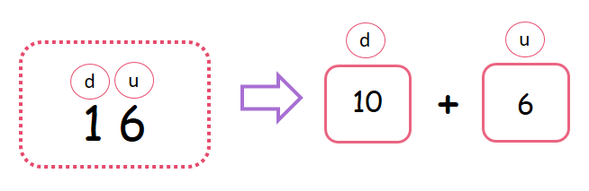
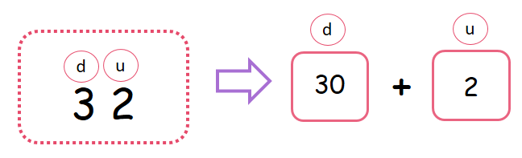

Unidades y Decenas
Parte 3- Terminamos

Descomposición aditiva de números con decenas y unidades
Descomponer un número es separarlo por partes, en este post vamos a ver cómo podemos separar en dos partes a los números formados por dos cifras, es decir, que tienen unidades y decenas. Para hacer esto vamos a usar una operación que ya conoces, esta operación es la suma.
- ¿Qué aprenderemos en esta tercera parte?
- Descomposición de números de dos cifras usando la suma
(1)Descomposición de números de dos cifras usando la suma
Para descomponer números, es decir para escribirlos por partes, debemos recordar el conteo de 10 en 10.
Observa:Si te aprendes el conteo de 10 en 10, sabrás con más rapidez el valor de las decenas.
Observa las siguientes imágenes:Ahora que ya tenemos listo este conteo de 10 en 10, podemos hacer una descomposición aditiva de números de dos cifras, observa que fácil es:
Observa que teníamos al inicio el número 16, ¿cuántas decenas tiene el número 16?, tiene 1 decena, y 1 decena vale por 10, y en las unidades tenemos el 6.
Observa ahora en esta imagen, tenemos el número 21, ¿cuántas decenas tiene el número 21?, tiene 2, y 2 decenas valen por 20, y en las unidades tenemos el 1.
Esta descomposición la podemos hacer con todos los números, pero recuerda que estamos trabajando solo números de 2 cifras. Observa la imagen que tenemos ahora, el número que nos han dado es el 32, ¿cuántas decenas tiene el número 32?, tiene 3, y 3 decenas valen por 30, y en las unidades tenemos el 2.
Material extra para trabajar el tema de descomposición aditiva de números con unidades y decenas:
En el siguiente enlace podrás encontrar fichas para trabajar el valor posicional de los números creadas por Imageneseducativas.com.